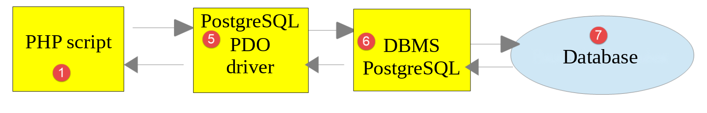

12. Uso del DBMS MySQL
Escribiremos ahora scripts PHP que usan una base de datos MySQL:

En la arquitectura anterior, el script PHP [1] no se comunica directamente con el DBMS (sistema de gestión de bases de datos) [3]. En su lugar, se comunica con un intermediario conocido como controlador del DBMS [2]. PHP ofrece una interfaz estándar para estos controladores, la interfaz [PDO] (PHP Data Objects). Esta interfaz es implementada por distintos controladores adaptados a cada DBMS: un controlador para el DBMS MySQL, otro para el DBMS PostgreSQL… Para cambiar de DBMS, se cambia de controlador:

El controlador PDO aísla el script PHP [1] del DBMS [3, 6]. Como estos controladores implementan una interfaz estándar, cabría esperar que el script PHP [1] permanezca sin cambios al pasar del DBMS MySQL [3] al DBMS PostgreSQL [6]. En realidad, este ideal no existe. De hecho, para comunicarse con el DBMS, el script PHP envía comandos SQL (Structured Query Language). Este lenguaje es implementado por todos los DBMS, pero es incompleto. En consecuencia, los DBMS le han agregado comandos propietarios. Esta es una de las principales causas de incompatibilidad entre los DBMS. Además, los tipos de datos que pueden usarse en las bases de datos pueden diferir de un DBMS a otro. Por ejemplo, PostgreSQL admite una gama de tipos de datos mucho más amplia que MySQL. Esta es una segunda causa de incompatibilidad. Otra causa es el manejo de las claves primarias automáticas (generadas por el DBMS): prácticamente cada DBMS tiene su propia política. Etc… Hay numerosas causas de incompatibilidad.
Si se quiere evitar reescribir el script PHP [1] al pasar de MySQL [3] a PostgreSQL [6], generalmente hay que insertar una nueva capa entre el script PHP [1] y los controladores PDO [2, 5], una capa cuyo propósito sea resolver las incompatibilidades entre los dos DBMS. Sin embargo, en los casos sencillos que encontraremos, esta capa adicional no será necesaria.
Usaremos ahora el DBMS MySQL. Su versión 8.4 se incluye en el paquete [Laragon] que instalamos al comienzo de este curso.
Si el lector no está familiarizado con los conceptos de bases de datos y con el lenguaje SQL, puede consultar el documento [http://sergetahe.com/cours-tutoriels-de-programmation/cours-tutoriel-sql-avec-le-sgbd-firebird/]. Este documento usa el DBMS Firebird en lugar de MySQL, pero cubre los fundamentos de las bases de datos y del lenguaje SQL. La documentación de MySQL 8.4 también está disponible en [https://dev.mysql.com/doc/refman/8.4/en/].
Los scripts de este capítulo están en la carpeta [scripts-console/mysql]:
12.1. Creación de una base de datos
Ahora mostraremos cómo crear una base de datos y un usuario de MySQL con la herramienta [Laragon].
Una vez iniciado, [Laragon] se gestiona desde su ventana principal y su menú (clic derecho en la ventana o en su icono de la barra de tareas):
- el botón [Start All] inicia el servidor web Apache y el DBMS MySQL. La ventana de [Laragon] indica entonces que cada uno está activo, junto con su puerto de escucha: 80 para Apache, 3306 para MySQL;
- el botón [Database] inicia la herramienta [HeidiSQL], incluida con [Laragon], que permite gestionar bases de datos MySQL de forma gráfica. También puede instalar la herramienta web [phpMyAdmin] (menú Tools / Quick Add), a la que se accede entonces mediante la URL [http://localhost/phpmyadmin];
- el botón [Terminal] abre una ventana de comandos en la que se pueden usar directamente las herramientas de [Laragon] (PHP, Composer, MySQL, etc.).
El curso de PHP 7 creaba la base de datos y su usuario con el mouse mediante [phpMyAdmin]. Aquí preferimos escribir los comandos SQL correspondientes en un archivo de texto, llamado script SQL. Un script así puede revisarse, corregirse, almacenarse junto con el código de la aplicación y volver a ejecutarse a voluntad para recrear la base de datos exactamente como estaba. El script [dbpersons.sql] es el siguiente:
Comentarios
- línea 1: en SQL, una línea que comienza con dos guiones es un comentario;
- línea 6: crea la base de datos [dbpersons] si todavía no existe. En ella crearemos una tabla de personas. El juego de caracteres [utf8mb4] permite almacenar todos los caracteres Unicode (letras acentuadas, así como caracteres asiáticos, emojis, etc.). Es el juego de caracteres predeterminado de MySQL 8. El nombre [utf8], usado en el curso de PHP 7, designa un juego de caracteres más antiguo e incompleto de MySQL (como máximo tres bytes por carácter), que ahora está obsoleto;
- Línea 9: creación del usuario [admpersons] con la contraseña [nobody]. Un usuario de MySQL se identifica por su nombre y por la máquina desde la que se conecta; en este caso, [localhost], la máquina local. La contraseña [nobody] es muy débil (fácil de adivinar). En un entorno de producción, debe elegirse una contraseña robusta;
- Línea 12: al usuario [admpersons] se le otorgan todos los privilegios sobre todas las tablas ([dbpersons.*]) de la base de datos [dbpersons], y ningún privilegio sobre las demás bases de datos.
Este script debe ser ejecutado por el administrador del SGBD. En la instalación de [Laragon], este es el usuario [root], que no tiene contraseña. Abra el terminal de [Laragon] en la carpeta [scripts-console/mysql] y ejecute el script con el cliente de línea de comandos [mysql]:
- La opción [-u root] especifica el nombre de usuario con el que se inicia sesión en el SGBD. Como [root] no tiene contraseña, no es necesario indicarla (opción [-p]);
- el símbolo [<] redirige el contenido del archivo [dbpersons.sql] a la entrada del cliente [mysql], que ejecuta los comandos SQL uno tras otro. Cuando todo sale bien, no se muestra nada.
Igualmente podríamos haber abierto el archivo [dbpersons.sql] en [HeidiSQL] (menú File / Load a SQL file) o en la pestaña [SQL] de [phpMyAdmin] y ejecutarlo desde allí. Verifique los permisos del usuario [admpersons] iniciando sesión con ese usuario. La opción [-e] permite pasar un comando SQL directamente al cliente [mysql]; el comando [show grants] muestra los permisos del usuario conectado:
- Línea 2: el cliente [mysql] advierte que una contraseña escrita en la línea de comandos ([-pnobody], sin espacio después de [-p]) puede ser vista por otros usuarios de la máquina. Con la opción [-p] sola, la contraseña se introduce por teclado sin mostrarse en pantalla;
- Línea 7: el usuario [admpersons] tiene todos los privilegios sobre la base de datos [dbpersons].
Ahora disponemos de:
- una base de datos MySQL [dbpersons];
- un usuario llamado [admpersons/nobody] que tiene acceso total a esta base de datos.
Escribiremos scripts PHP para trabajar con la base de datos. PHP ofrece diversas bibliotecas para administrar bases de datos. Usaremos la biblioteca [PDO] (PHP Data Objects), que se interpone entre el código PHP y el SGBD:

La biblioteca [PDO] permite que el script PHP sea independiente de la naturaleza exacta del SGBD utilizado. Así, como se muestra arriba, el SGBD MySQL puede reemplazarse por el SGBD PostgreSQL con un impacto mínimo en el código del script PHP. Cada controlador PDO es una extensión de PHP que debe estar habilitada. El siguiente script [pdo-drivers.php] muestra los controladores disponibles:
- línea 7: el método estático [getAvailableDrivers] de la clase [PDO] devuelve la lista de controladores PDO disponibles;
- Línea 10: la función [extension_loaded] indica si una extensión de PHP está cargada. Los controladores PDO para MySQL, PostgreSQL y SQLite son las extensiones [pdo_mysql], [pdo_pgsql], y [pdo_sqlite].
Resultados:
En esta instalación, los tres controladores están activos. Para este capítulo solo se necesita el controlador [mysql]. Si falta un controlador, actívelo en el menú de [Laragon]: PHP / Extensions, y luego haga clic en la extensión deseada, por ejemplo, [pdo_mysql]. Otra forma de habilitar una extensión es editar directamente el archivo [php.ini] que configura PHP (menú PHP / php.ini de [Laragon]). Allí, una extensión se habilita con una línea con el siguiente formato:
Queda deshabilitada cuando la línea se comenta con un punto y coma ([;extension=pdo_pgsql]). Después de modificar el archivo [php.ini], debe reiniciar los servicios de [Laragon] (botón [Reload]) para que Apache aplique los cambios. En cambio, los scripts de consola vuelven a leer el archivo [php.ini] cada vez que se ejecutan.
12.2. Conexión a una base de datos MySQL
Para conectarse a un SGBD, debe crearse un objeto [PDO]. Se puede usar el constructor de la clase [PDO] o, a partir de PHP 8.4, su método estático [connect]. Ambos aceptan los mismos parámetros:
Los parámetros tienen los siguientes significados:
Parámetro | Significado |
[$dsn] | (Data Source Name) una cadena que especifica la naturaleza del SGBD y su ubicación en la red. La cadena ["mysql:host=localhost"] indica que se trata de un SGBD MySQL que se ejecuta en la máquina local. Esta cadena puede incluir otros parámetros, separados por punto y coma, como el puerto de escucha del SGBD, el nombre de la base de datos a la que se desea conectar y el juego de caracteres utilizado para la comunicación: ["mysql:host=localhost;port=3306;dbname=dbpersons;charset=utf8mb4"] |
[$username] | el nombre del usuario que inicia sesión |
[$password] | su contraseña |
[$options] | un arreglo de opciones para el controlador del SGBD |
Solo el primer parámetro es obligatorio. El objeto creado de este modo servirá luego de base para todas las operaciones realizadas sobre la base de datos a la que se conectó. Si no se puede crear el objeto, se lanza una excepción [PDOException].
A continuación se muestra un ejemplo de conexión [mysql-01.php]:
Comentarios
- líneas 8–10: los parámetros de conexión;
- línea 14: la conexión al SGBD. Aquí se usa el método [connect] con los siguientes parámetros:
- una cadena que especifica el tipo de SGBD y su ubicación. La cadena ["mysql:host=localhost"] indica que se trata de un SGBD MySQL que se ejecuta en la máquina local. No se especificó el puerto; por lo tanto, se usa el puerto 3306 por defecto. Tampoco se especificó el nombre de la base de datos. Se establecerá entonces una conexión con el SGBD MySQL y más adelante se podrá seleccionar una base de datos específica;
- un identificador de usuario;
- su contraseña;
- Línea 17: [$connection::class] es el nombre de la clase del objeto [$connection]. A partir de PHP 8.4, cada controlador PDO tiene su propia clase, derivada de la clase [PDO]: [Pdo\Mysql] para MySQL, [Pdo\Pgsql] para PostgreSQL y [Pdo\Sqlite] para SQLite. El método [PDO::connect] crea un objeto de la clase correspondiente al DSN. Con [new PDO(...)], obtendríamos un objeto de la propia clase [PDO], que funciona del mismo modo pero no da acceso a los métodos específicos de cada controlador. Como solo usaremos los métodos comunes a todos los controladores, ambas notaciones son aceptables;
- línea 19: la conexión se cierra al eliminar la última referencia al objeto PDO creado inicialmente. Esto ocurre automáticamente al final del script;
- línea 20: la conexión a un SGBD puede fallar. En ese caso, se lanza una excepción [PDOException]. Esta excepción deriva de la excepción de PHP [RuntimeException];
- Línea 21: se muestra el mensaje de error de la excepción;
- línea 22: el script termina con un código de salida distinto de cero, que señala el fallo a cualquier programa que lo haya llamado.
Resultados:
Volvamos a ejecutar el script asignando a la constante [PWD] una contraseña incorrecta. El resultado es el siguiente:
El mensaje contiene tres datos: el código SQLSTATE [HY000], un código de error estandarizado común a todos los SGBD (HY000 = error general), el código de error específico de MySQL [1045] y el mensaje de MySQL.
12.3. Creación de una tabla
El script [mysql-02.php] muestra cómo crear una tabla en una base de datos:
Comentarios
- Línea 7: esta vez, el DSN hace referencia a la base de datos [dbpersons] ([dbname=dbpersons]). El parámetro [charset=utf8mb4] le indica al SGBD que las cadenas de caracteres intercambiadas con él están codificadas en UTF-8, la codificación utilizada en nuestros scripts (PHP). Esto garantiza que los caracteres acentuados se almacenen correctamente en la base de datos y se recuperen correctamente;
- línea 14: conexión a la base de datos. Este es siempre el primer paso. El resultado de la conexión es un objeto [PDO] a través del cual se realizarán las operaciones con la base de datos;
- Línea 16: el comando SQL [drop table] elimina la tabla [persons] de la base de datos [dbpersons]. La cláusula [if exists] evita un error si la tabla [persons] no existe;
- Línea 17: ejecución del comando SQL anterior en la base de datos [dbpersons] mediante el método [PDO::exec]. Esta ejecución puede provocar una [PDOException], que será interceptada por la cláusula [catch];
- Líneas 19–20: este comando SQL crea una tabla llamada [persons]. Una tabla contiene filas y columnas. Las columnas forman lo que se denomina la estructura de la tabla. Las filas forman el contenido de la tabla. Una base de datos puede contener una o varias tablas. La tabla [persons] tendrá aquí tres columnas:
- first_name: el nombre de pila de una persona como cadena de hasta 30 caracteres;
- last_name: el apellido de la misma persona como cadena de hasta 30 caracteres;
- age: la edad de la persona como número entero;
- El atributo [not null] en una columna exige que la columna tenga un valor. No proporcionarlo produce un error [PDOException];
- [primary key(last_name, first_name)] define una clave primaria para la tabla [persons]. Una clave primaria tiene un valor único para cada fila de la tabla. Aquí, la clave primaria se obtiene concatenando las columnas [last_name] y [first_name] de la fila. Esta restricción garantiza que la tabla no pueda contener dos personas con el mismo nombre y apellido; es decir, dos personas con el mismo nombre completo. Crear una persona con el mismo nombre que otra de la tabla provoca una [PDOException];
- líneas 23–25: si se produce un error [PDOException] se muestra el mensaje de error asociado;
- líneas 26–28: la cláusula [finally] se ejecuta en todos los casos, ocurra o no una excepción, para cerrar la conexión con la base de datos.
En caso de error, una operación SQL realizada con un objeto [PDO] puede devolver un valor específico (a menudo el booleano [false]) sin informar de nada, o bien lanzar una excepción. Este comportamiento se controla mediante el atributo [PDO::ATTR_ERRMODE] de la conexión. En PHP 7, el modo por defecto era el primero: los errores eran silenciosos, y el procedimiento de PHP 7 solicitaba el segundo modo mediante la siguiente instrucción:
A partir de PHP 8.0, el modo de excepciones es el predeterminado: cualquier error del SGBD provoca una [PDOException]. Por lo tanto, esta instrucción ya no es necesaria y no volveremos a incluirla. Por eso también escribimos [drop table if exists]: en PHP 7, el comando [drop table persons] sobre una tabla inexistente fallaba silenciosamente; en PHP 8, lanzaría una excepción.
Resultados:
Si el script se ejecuta sin errores, puede verificar la existencia de la tabla y su estructura con [HeidiSQL], [phpMyAdmin] o, más sencillamente, con el cliente [mysql]. El comando SQL [describe] muestra la estructura de una tabla:
- Líneas 6–8: las tres columnas de la tabla, junto con sus tipos (columna Type);
- columna Null: ninguna de las tres columnas puede estar vacía;
- columna Key: las columnas [first_name] y [last_name] forman parte de la clave primaria (PRI).
La consulta SQL [show index] muestra los índices de la tabla. Un índice permite encontrar las filas de la tabla con un valor de índice específico más rápido que si se recorrieran secuencialmente las filas de la tabla. La clave primaria siempre forma parte de los índices, pero un índice puede no ser una clave primaria:
- El índice aquí es la clave primaria (columna Key_name = PRIMARY);
- está formado por las columnas [last_name, first_name] de cada fila, en ese orden (columnas Seq_in_index y Column_name).
Veamos ahora qué sucede si introducimos errores en el nombre de la base de datos, en el nombre de usuario y en la contraseña, respectivamente.
Si introducimos un nombre de base de datos inexistente ([dbname=dbpersons2]):
Si introducimos un nombre de usuario inexistente:
Si se introduce una contraseña incorrecta:
Observe que MySQL no indica si el nombre de usuario o la contraseña son incorrectos: es una medida de seguridad destinada a no dar pistas a quien intente adivinar las credenciales. De igual modo, el usuario [admpersons] no sabe si la base de datos [dbpersons2] existe o no: solo sabe que no puede acceder a ella.
12.4. Llenado de una tabla
Vamos a escribir un script PHP que ejecuta los comandos SQL que se encuentran en el siguiente archivo de texto, [creation.txt]:
Comentarios
- El lenguaje SQL (Structured Query Language) no distingue entre mayúsculas y minúsculas en los comandos SQL;
- Línea 1: eliminar la tabla [persons] si existe;
- Línea 2: crear la tabla [persons] con tres columnas (first_name, last_name, age) y la clave primaria (last_name, first_name);
- Líneas 3–9: insertar 7 filas en la tabla [persons];
- línea 5: esta instrucción insert debería fallar porque intenta la misma inserción que la línea anterior. La restricción de clave primaria debería impedir esta inserción: no puede haber dos personas con el mismo nombre y apellido;
- línea 9: esta instrucción insert también debería fallar por la misma razón;
- línea 7: el nombre de pila [Géraldine] contiene un carácter acentuado. El archivo [creation.txt], como todos los archivos del curso, está codificado en UTF-8: esta es la codificación predeterminada de [VS Code], como se muestra en su barra de estado. El curso de PHP 7 agregaba al archivo el comando específico de MySQL para indicarle al SGBD la codificación de los caracteres recibidos. Ya no es necesario: la codificación se establece de una vez por todas mediante el parámetro [charset=utf8mb4] del DSN.
El script PHP encargado de ejecutar los comandos SQL de este archivo de texto es el siguiente: [mysql-03.php]:
Comentarios
- La función [executeCommands] (líneas 35–80) se encarga de ejecutar los comandos SQL que encuentra en el archivo de texto [$sqlFileName] (parámetro 2). Para ejecutarlos, utiliza la conexión abierta [$connection] (parámetro 1) con el servidor MySQL. El tercer parámetro, [$tracking], es un booleano que controla la salida en pantalla: cuando vale [true], el comando SQL ejecutado se muestra en pantalla junto con su resultado (éxito o fallo); de lo contrario, la ejecución del comando SQL es silenciosa. El cuarto parámetro, [$stop], controla qué hacer cuando un comando SQL falla: si es [true], especifica que la ejecución de los comandos SQL debe detenerse; de lo contrario, la ejecución continúa. La función [executeCommands] devuelve un arreglo de mensajes de error; este arreglo está vacío si no se produjo ningún error.;
- línea 12: la ruta del archivo [creation.txt] se construye a partir de la constante [__DIR__], que es el directorio del script. Esto garantiza que el script pueda localizar su archivo sin importar desde qué directorio se ejecute;
- líneas 15–20: se abre una conexión con la base de datos MySQL [dbpersons]. Si la conexión falla, se muestra un mensaje de error y el script termina;
- línea 23: se llama a la función [executeCommands] para ejecutar el archivo de comandos SQL. Se le pasa una conexión abierta. Los dos últimos argumentos se pasan por nombre ([tracking: true, stop: false]): son argumentos con nombre (PHP 8.0). La llamada [executeCommands($connection, SQL_COMMANDS_FILENAME, true, false)] sería equivalente pero menos legible: sin mirar la firma de la función, no está claro qué significan [true] y [false] ;
- línea 25: se cierra la conexión;
- líneas 27–30: se muestran los errores devueltos por la función [executeCommands];
- Líneas 45–47: los comandos SQL se colocan en el arreglo [$queries] mediante la función [file]. La opción [FILE_IGNORE_NEW_LINES] elimina el carácter de fin de línea de cada línea leída, mientras que la opción [FILE_SKIP_EMPTY_LINES] ignora las líneas vacías. Ambas opciones se combinan con el operador [|] (OR binario). Si el archivo no se puede leer, [file] no se llama (lo que emitiría una advertencia) y [$queries] equivale a [false];
- líneas 49–51: si no se pudo leer el archivo de comandos SQL, se devuelve un arreglo de errores que contiene un único mensaje;
- línea 53: los errores se acumulan en el arreglo [$errors];
- línea 54: se recorren todas las consultas;
- línea 56: la función [trim] elimina los espacios que preceden y siguen al texto del comando SQL. Por “espacios” entendemos el carácter de espacio, el carácter de tabulación \t, el retorno de carro \r, el salto de línea \n, etc. Una línea que contiene solo espacios queda así vacía: se ignora (línea 60);
- línea 64: el comando SQL se envía al servidor MySQL. El método [PDO::exec] lanza una excepción si la ejecución falla. Si la ejecución tiene éxito, el comando SQL se muestra en pantalla cuando el parámetro [$tracking] vale [true];
- línea 71: si se produce un error, el mensaje de error se agrega al arreglo de errores;
- líneas 73–75: si el parámetro [$stop] vale [true], se sale del bucle mediante la instrucción [break];
- línea 79: una vez ejecutados todos los comandos SQL, se devuelve el arreglo de errores [$errors].
La función [addError] (líneas 82–91) agrega un error al arreglo de errores [$errors]. Recibe 4 parámetros:
- el parámetro [$errors] se pasa por referencia ([&$errors]). Esto se debe a que queremos modificar el arreglo pasado como parámetro, no una copia de este;
- el parámetro [$query] es el texto SQL del comando que falló;
- el parámetro [$msg] es el mensaje de error asociado al comando fallido;
- el booleano [$tracking] indica si el mensaje de error debe mostrarse ([true]) o no ([false]) en la consola.
Observe que las funciones [executeCommands] y [addError] están definidas después del código que las utiliza. Esto es posible porque PHP identifica todas las funciones definidas en el nivel superior de un script antes de comenzar a ejecutarlo.
Salida en pantalla:
- Líneas 6 y 10: ambas inserciones de homónimos fallaron: la clave primaria 'Lefur-Sylvie' (y 'Girond-Paulette', respectivamente) ya existe (Duplicate entry). El código SQLSTATE [23000] indica una violación de una restricción de integridad; el código [1062] es el código de error de MySQL;
- Líneas 12–16: el resumen de errores.
Las inserciones realizadas pueden verse con el cliente [mysql]:
Observe que las filas se devuelven en el orden de la clave primaria (apellido, nombre), que no es el orden de las inserciones. En SQL, el orden de las filas devueltas por un [select] solo está garantizado si se especifica mediante una cláusula [order by].
12.5. Ejecución de comandos SQL cualesquiera
El siguiente script muestra la ejecución de comandos SQL contenidos en el siguiente archivo de texto, [sql.txt]:
Entre estos comandos SQL se encuentra el comando [select], que devuelve resultados de la base de datos; los comandos [insert], [update], [delete], que modifican la base de datos sin devolver ningún resultado, y por último comandos erróneos como el último ([xselect]). El script [mysql-04.php] se basa en el script [mysql-03.php], con el nombre del archivo de comandos SQL ([__DIR__ . "/sql.txt"]) modificado. Solo se modifica la función [executeCommands] y se agrega una función [displayInfo] :
Comentarios
- Líneas 35–87: la función [executeCommands] se ha modificado ligeramente: el comando [select] no se ejecuta del mismo modo que los demás comandos SQL. Este comando es el único que devuelve una tabla como resultado; es decir, un conjunto de filas y columnas de la base de datos;
- Línea 63: aislamos la primera palabra del comando SQL. La función [explode] divide la consulta en los espacios en como máximo 2 partes (tercer parámetro); el primer segmento ([[0]]) es el nombre del comando, convertido a minúsculas por la función [strtolower]. El curso de PHP 7 usaba una expresión regular;
- líneas 67–69: si el comando SQL es [select], se usa el método [PDO::query]; de lo contrario, se usa el método [PDO::exec] para ejecutar el comando SQL. En ambos casos, si la ejecución falla, se lanza una excepción que es capturada por la cláusula [catch]. Si la ejecución tiene éxito, su resultado se muestra mediante la función [displayInfo] (línea 75):
- El método [query] devuelve un objeto de tipo [PDOStatement], que da acceso a las filas devueltas por [select]. Su segundo parámetro, [PDO::FETCH_NUM], especifica que cada fila debe devolverse como un arreglo indexado por los números de columna 0, 1, 2, …;
- el método [exec] devuelve un entero: el número de filas modificadas por el comando SQL;
- Líneas 101–124: la función [displayInfo] muestra información sobre el resultado de la ejecución de un comando SQL. El parámetro [$result] tiene el tipo [PDOStatement|int]: es un tipo de unión (PHP 8.0), que acepta un objeto [PDOStatement] o un entero;
- línea 104: se trata el caso de [select]. El operador [instanceof] verifica el tipo del objeto [$result];
- línea 107: el método [PDOStatement::columnCount] devuelve el número de columnas de la tabla de resultados de [select];
- línea 108: el método [PDOStatement::getColumnMeta] devuelve un arreglo con información sobre la columna n.º [$i] de la tabla de resultados de [select]. En este arreglo, el valor asociado a la clave 'name' es el nombre de la columna. Los nombres de las columnas se recopilan en el arreglo [$columns];
- línea 110: la función [implode] concatena los nombres de las columnas, separándolos con comas;
- línea 113: la función [str_repeat] se usa para construir una línea separadora de la misma longitud que el título. La función [mb_strlen] cuenta los caracteres de una cadena UTF-8; la función [strlen] cuenta los bytes, y un carácter acentuado ocupa dos bytes;
- Líneas 115–117: un objeto de tipo [PDOStatement] se puede recorrer con un bucle [foreach]. En cada iteración, el elemento obtenido es una fila de la tabla de resultados de [select], en forma de un arreglo que contiene los valores de las diversas columnas de la fila. Estos valores se muestran separados por comas;
- Líneas 121–123: el resultado de ejecutar un comando [insert], [update] o [delete] es el número de filas modificadas por el comando. El curso de PHP 7 usaba aquí una instrucción [switch], una de cuyas cláusulas estaba escrita por error como [case "delete";] con un punto y coma en lugar de dos puntos. PHP lo toleraba; a partir de PHP 8.5, esta sintaxis está obsoleta.
Salida en pantalla:
- líneas 33–35: el último [select] no devuelve ninguna fila: la persona [Bruneau] fue eliminada por el comando [delete] anterior;
- Línea 36: el comando [xselect] no existe. El código SQLSTATE [42000] indica un error de sintaxis o una violación de acceso; el código de MySQL [1064] indica un error de sintaxis.
12.6. Uso de comandos SQL preparados
12.6.1. Ejemplo 1
Examinemos el siguiente script: [mysql-05.php]:
Comentarios
Aquí nos interesan las líneas que insertan personas en la tabla de personas de la base de datos [dbpersons].
- Línea 16: el comando SQL [delete] sin la cláusula [where] elimina todas las filas de la tabla;
- Línea 23: un comando SQL parametrizado se “prepara”. Los parámetros van precedidos de dos puntos: [:last_name], [:first_name], [:age]. Para “preparar” un comando SQL se usa el método [PDO::prepare]. El resultado es un objeto de tipo [PDOStatement]. “Preparar” no es ejecutar: no se modifica nada en la base de datos;
- Línea 26: ejecución de la sentencia preparada mediante el método [PDOStatement::execute]. Para ello, hay que asignar valores a los parámetros [:last_name], [:first_name] y [:age]. Hay varias maneras de hacerlo. Aquí usamos un arreglo asociativo cuyas claves son los nombres de los parámetros de la sentencia preparada, que pasamos al método [PDOStatement::execute];
- línea 27: el método [PDOStatement::rowCount] devuelve el número de filas modificadas por la última ejecución de la sentencia preparada. En la cadena entre comillas, la llamada al método se encierra entre llaves [{...}] para que PHP pueda evaluarla. Lo mismo ocurre con el elemento de arreglo [{$person["first_name"]}];
- líneas 30–33: otra forma de hacerlo es asignar un valor a los parámetros mediante el método [PDOStatement::bindValue] antes de llamar a [execute] sin argumentos. El tercer parámetro opcional de [bindValue] especifica el tipo SQL del valor ([PDO::PARAM_INT] para un entero, [PDO::PARAM_STR], el valor por defecto, para una cadena). El inconveniente es que se requiere una instrucción por parámetro. El método del arreglo asociativo suele ser más cómodo.
El método utilizado aquí para realizar las inserciones:
- una sentencia preparada;
- n ejecuciones de la sentencia preparada;
es más eficiente en términos de tiempo de ejecución que ejecutar n sentencias SQL distintas. Sobre todo, tiene otra ventaja decisiva: los valores de los parámetros se pasan al SGBD por separado del texto de la sentencia SQL. Por lo tanto, no pueden alterar el significado del comando. Si el comando SQL se construyera por concatenación, por ejemplo, ["insert into persons values ('$first_name', '$last_name', $age)"], un nombre de pila que contuviera un apóstrofo (“ Jean-Michel d'Ormesson”) provocaría un error de sintaxis, y un usuario malintencionado podría colar los comandos SQL que quisiera: esto se conoce como un ataque de inyección SQL. Por lo tanto, deben usarse consultas preparadas siempre que una consulta contenga valores provenientes del exterior del script. Pueden usarse con los comandos SQL [select], [update], [delete] e [insert]. En el caso del comando SQL [select], después de ejecutarlo con [PDOStatement::execute], las filas del resultado se recuperan con los métodos [PDOStatement::fetch] o [PDOStatement::fetchAll].
Resultados:
12.6.2. Ejemplo 2
El siguiente script, [mysql-06.php], muestra el uso de una sentencia preparada para la operación SQL [select], así como diversas maneras de recuperar las filas devueltas por esta operación:
Comentarios
- líneas 13–23: una clase llamada [Person] cuyos atributos privados tipados tienen los nombres de las columnas de la tabla [persons];
- Líneas 26–34: una clase inmutable [ImmutablePerson] cuyo constructor tiene parámetros con los nombres de las columnas de la tabla [persons];
- línea 38: el cuarto parámetro de [PDO::connect] es un arreglo de opciones de conexión. La opción [PDO::ATTR_DEFAULT_FETCH_MODE] determina cómo se devolverán por defecto las filas leídas: en este caso, [PDO::FETCH_ASSOC], que usa arreglos asociativos indexados por los nombres de las columnas. Sin esta opción, el modo por defecto es [PDO::FETCH_BOTH] (véase más adelante);
- líneas 43–45: se insertan 10 filas en la tabla [persons] mediante una consulta preparada. El arreglo de valores se construye directamente dentro de la llamada a [execute];
- líneas 47–48: un comando SQL [select] se “prepara” y luego se ejecuta;
- línea 50: el método [PDOStatement::fetch] se usa para recuperar la siguiente línea del resultado de la operación SQL [select] ejecutada; en este caso, la primera línea. El método [fetch] puede devolver las filas de varias maneras. El script muestra algunas de ellas. Sin ningún parámetro, usa el modo por defecto de la conexión, que en este caso es un arreglo asociativo. Observe que la edad se devuelve como un entero ([int(0)]). Esta es una novedad de PHP 8.1: antes, el controlador de MySQL devolvía todos los valores como cadenas de caracteres ([string(1) "0"] en PHP 7). El resultado mostrado por [var_dump] es el siguiente:
- Línea 53: el parámetro [PDO::FETCH_BOTH] hace que la fila devuelta sea un arreglo indexado tanto por los nombres como por los números de columna:
- línea 56: el parámetro [PDO::FETCH_OBJ] hace que la fila devuelta sea un objeto de tipo [stdClass], cuyos atributos son los nombres de las columnas de la tabla:
- Línea 59: el modo de lectura del método [fetch] se establece mediante el método [PDOStatement::setFetchMode]. Este modo pasa entonces a ser el modo por defecto del comando [$statement] hasta que se cambie, ya sea con otra operación [setFetchMode] o pasando un modo como parámetro al método [fetch], como se hizo antes. La operación [setFetchMode(PDO::FETCH_CLASS, Person::class)] especifica que la línea leída debe colocarse en un objeto de tipo [Person]. [Person::class] es la cadena "Person", el nombre completo de la clase. PDO crea el objeto y luego asigna a sus atributos los valores de las columnas del mismo nombre, incluso si esos atributos son privados. La siguiente línea muestra el resultado:
- Líneas 63–65: muestran cómo procesar secuencialmente las filas restantes de [select]. El método [fetch] devuelve [false] cuando ya no hay más filas, lo que termina el bucle. La visualización de [$person] usa el método [__toString] de la clase [Person]:
- líneas 67–68: un [select] parametrizado: solo queremos las personas que tengan al menos 70 años;
- Línea 69: el método [PDOStatement::fetchAll] devuelve todas las filas del resultado de una sola vez, en este caso como arreglos asociativos (el modo por defecto de la conexión). La función [array_map] convierte cada uno de ellos en un objeto [ImmutablePerson]. La expresión [new ImmutablePerson(...$row)] usa el operador de propagación [...] sobre un arreglo asociativo: cada clave se convierte en un argumento con nombre (PHP 8.1). Así, la línea [["last_name" => "lastName7", "first_name" => "firstName7", "age" => 70]] da como resultado la llamada [new ImmutablePerson(last_name: "lastName7", first_name: "firstName7", age: 70)]. Esta técnica es adecuada para una clase inmutable cuyos atributos son inicializados por el constructor, mientras que el modo [PDO::FETCH_CLASS], que asigna los valores directamente a los atributos, falla con una clase como [ImmutablePerson], cuyo constructor exige argumentos. Además, tiene la ventaja de que PHP verifica el tipo de cada valor. El resultado mostrado es el siguiente:
La siguiente tabla resume los modos de lectura vistos:
Modo | Una línea se devuelve en forma de |
[PDO::FETCH_ASSOC] | un arreglo asociativo [columna => valor] |
[PDO::FETCH_NUM] | un arreglo indexado por los números de columna 0, 1, 2… |
[PDO::FETCH_BOTH] | un arreglo indexado tanto por los nombres como por los números de columna (modo por defecto de PDO) |
[PDO::FETCH_OBJ] | un objeto [stdClass] cuyos atributos son los nombres de las columnas |
[PDO::FETCH_CLASS] | un objeto de la clase especificada cuyos atributos tienen los nombres de las columnas |
Cada controlador también tiene sus propias opciones, agrupadas dentro de su clase a partir de PHP 8.4. Por ejemplo, la opción que ejecuta un comando SQL cada vez que se establece una conexión con MySQL se escribe [Pdo\Mysql::ATTR_INIT_COMMAND]. Las antiguas constantes [PDO::MYSQL_ATTR_INIT_COMMAND], que se encuentran en muchos documentos, están obsoletas desde PHP 8.5.
12.7. Uso de transacciones
Una transacción permite agrupar una secuencia de comandos SQL en una única unidad de ejecución: o bien todos los comandos tienen éxito, o bien uno de ellos falla, en cuyo caso se revierten todos los comandos SQL anteriores. En otras palabras, cuando se usa una transacción para ejecutar comandos SQL, una vez finalizada la transacción la base de datos queda en un estado estable:
- o bien en un nuevo estado creado por la ejecución exitosa de todos los comandos SQL de la transacción;
- o bien en el estado en que se encontraba antes de que la transacción comenzara a ejecutarse.
Retomemos el ejemplo de ejecución de los comandos SQL contenidos en un archivo de texto tratado en la sección “Ejecución de comandos SQL cualesquiera”. Incluiremos esta ejecución en una transacción. Los comandos SQL estarán contenidos en el siguiente archivo [sql2.txt]:
El comando erróneo de la línea 11 hará que falle toda la transacción. Por lo tanto, la base de datos debería volver al estado anterior a la transacción. En el ejemplo anterior, la fila insertada por la línea 9 no debería aparecer en la tabla. El script difiere muy poco del script [mysql-04.php]. El nombre del archivo de comandos SQL pasa a ser [__DIR__ . "/sql2.txt"], y la función [executeCommands] pierde su cuarto parámetro:
Esto se debe a que, como los comandos SQL se ejecutan dentro de una transacción, cualquier error hará que la transacción termine. La función [executeCommands] queda así:
Comentarios
- Líneas 41–42: recordatorio del papel de una transacción;
- línea 54: se inicia una transacción mediante el método [PDO::beginTransaction]. A partir de este punto, cualquier comando SQL ejecutado dentro del bucle [foreach] se ejecuta dentro de esta transacción;
- líneas 82–83: ante el primer error se sale del bucle: no tiene sentido ejecutar los comandos siguientes, ya que la transacción se revertirá;
- líneas 87–95: el arreglo [$errors] está vacío si no se produjo ningún error. La transacción se confirma entonces mediante el método [PDO::commit]: los cambios realizados por los comandos SQL se vuelven permanentes. De lo contrario, la transacción se revierte mediante el método [PDO::rollBack]: se deshacen los cambios realizados por los comandos SQL de la transacción. Luego, el error de la transacción se agrega a la lista de errores.
Antes de ejecutar el script [mysql-07.php], la tabla [persons] contiene las diez filas insertadas por el script [mysql-06.php]:
Ejecute el script [mysql-07.php]. Lo que se muestra en pantalla es lo siguiente:
- Líneas 47–52: la fila [Josette, Bruneau, 46] se insertó correctamente en la tabla dentro de la transacción;
- Línea 53: se produce un error en el comando [xselect];
- Línea 54: la transacción se revierte entonces.
Si verificamos el estado de la base de datos, la encontramos en el mismo estado que antes de ejecutar el script. En particular, no vemos la fila [Josette, Bruneau, 46] de la línea 52 de los resultados anteriores:
Resumen:
- una transacción comienza con el método [PDO::beginTransaction];
- se completa con éxito mediante el método [PDO::commit];
- se termina en caso de fallo mediante el método [PDO::rollBack];
- el método [PDO::inTransaction] indica si hay una transacción en curso.
Al trabajar con una base de datos, es una buena práctica colocar toda operación SQL dentro de una transacción para aislarla de los demás usuarios de la base de datos (este es también uno de sus propósitos). Una transacción debe ser lo más breve posible. Por lo tanto, asegúrese de terminarla con un [commit] o un [rollBack], según corresponda. Por último, tenga en cuenta: en MySQL, los comandos que modifican la estructura de la base de datos ([create table], [drop table], etc.) no se pueden revertir. Confirman implícitamente la transacción en curso. Por eso el archivo [sql2.txt] contiene únicamente comandos [select], [insert], [update], y [delete].